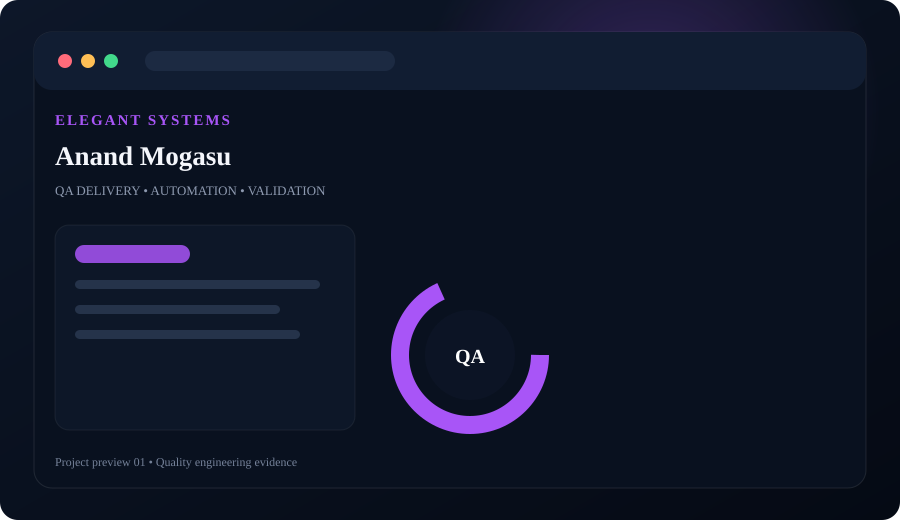
Anand Mogasu
Application QA covering business workflows, validation rules, integration scenarios and defect lifecycle management.
Manual QAAutomationIntegrationJIRA
Projects are grouped in sequence by experience: Elegant Systems, Freelance / Teaching, eVision IT, Crucial Software & IT Park, and U.N. Mehta. Use the filters to explore each portfolio.

Application QA covering business workflows, validation rules, integration scenarios and defect lifecycle management.
E-commerce style testing covering catalogue behaviour, search/filter scenarios, cart flows and data integrity.
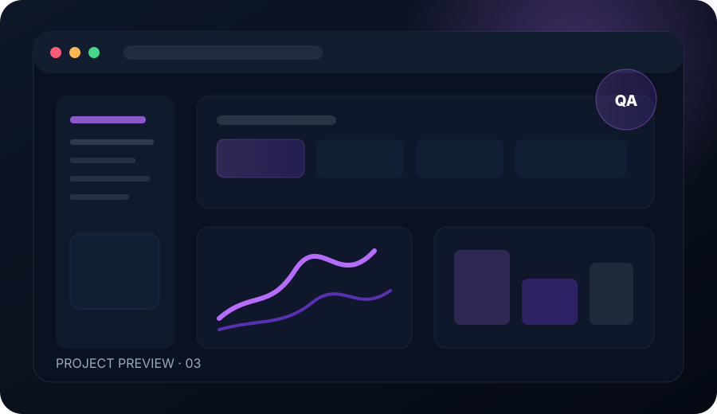
Food ordering application coverage across user journeys, data validation, edge cases and release regression.
Web application testing focused on customer journeys, ordering flows, validation, responsive behaviour and regression coverage.
End-to-end QA and automation coverage for a production web application, combining UI workflows, API validation, regression and release confidence.
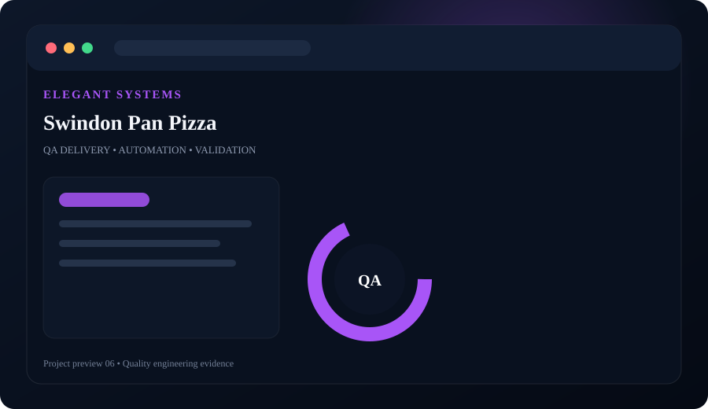
Ordering workflow validation with a focus on responsive UI, menu logic, cart behaviour and negative scenarios.
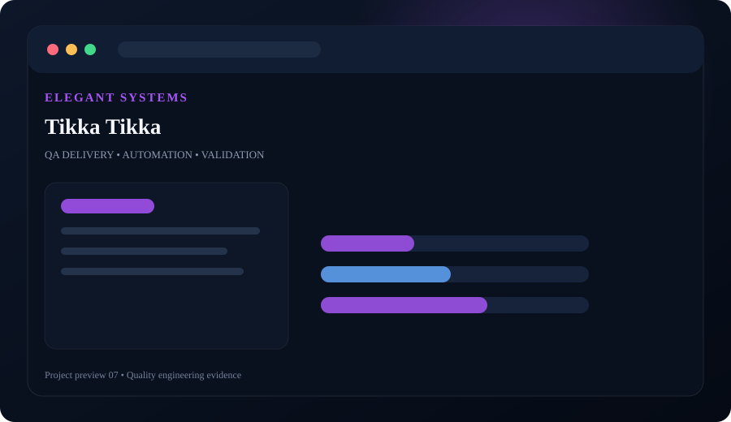
Restaurant ordering experience with functional, integration and user-flow testing across menus, cart and checkout scenarios.
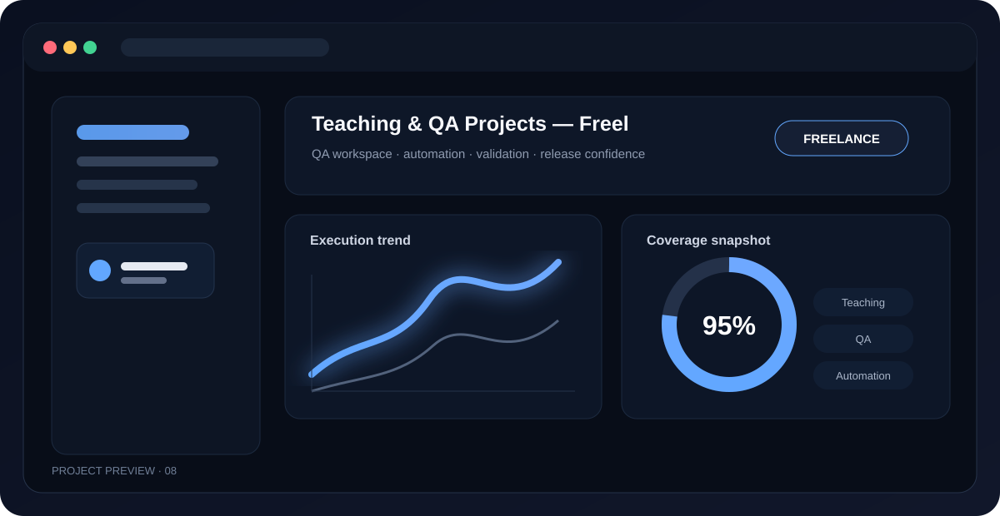
Freelance teaching and QA projects covering test planning, automation fundamentals, defect lifecycle, practical test execution and mentoring.
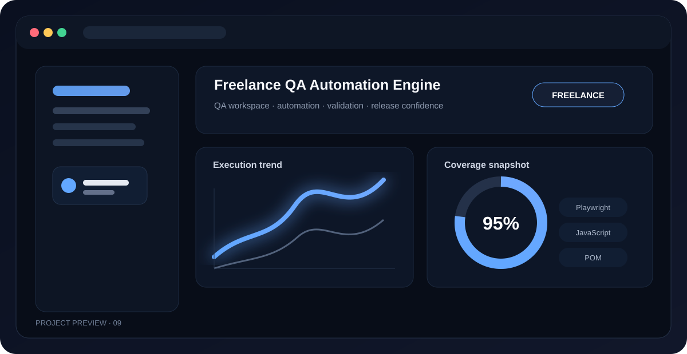
Playwright UI automation, Page Object Model design and Postman API testing for an e-commerce web application.
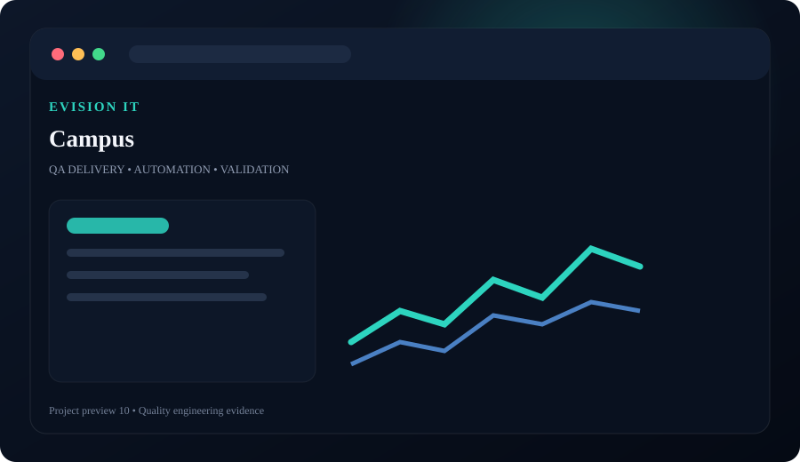
Government / education workflow testing with detailed functional, regression and data-validation coverage.
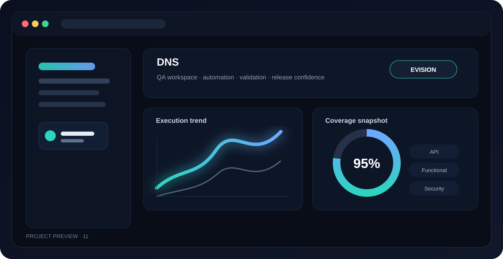
DNS management and validation workflows with emphasis on functional coverage, API/data checks and edge cases.
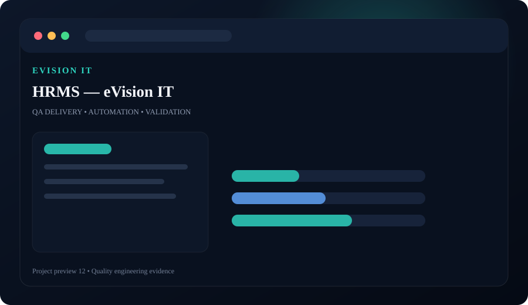
HRMS workflows covering employee records, role permissions, business rules, reports and regression scenarios.
Trademark workflow testing with business-rule validation, search scenarios, permissions and defect investigation.
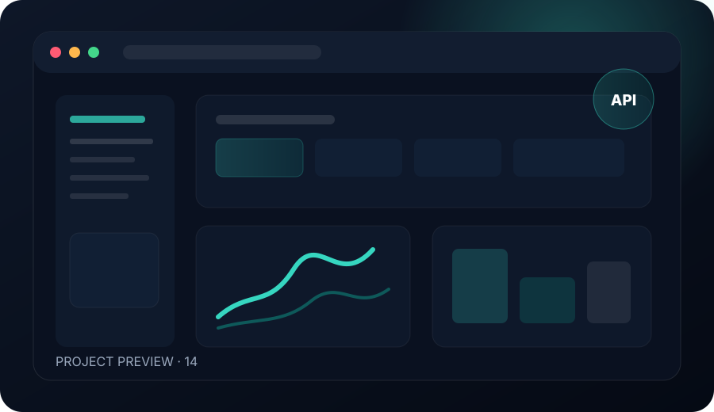
WHOIS/search workflow validation including input handling, response accuracy, error paths and integration checks.
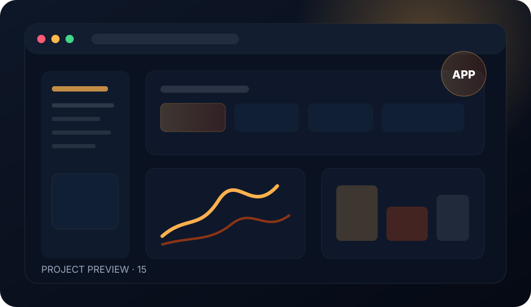
Shopping application project covering catalogue, cart, checkout, validation and database-backed workflows.
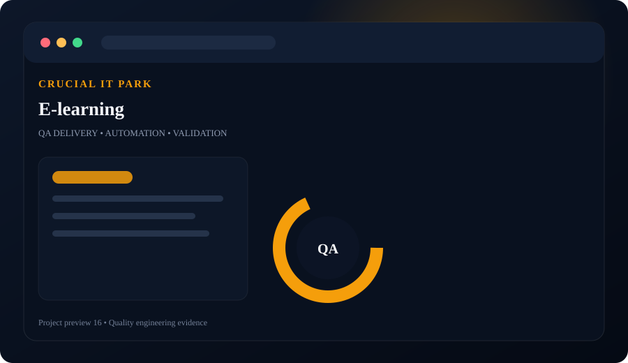
Learning platform workflows covering user access, course journeys, content validation and role-based scenarios.
Food ordering application with end-to-end validation for menus, cart, ordering and transaction-related scenarios.
Library management workflows including users, books, issue/return operations, validation and data integrity.
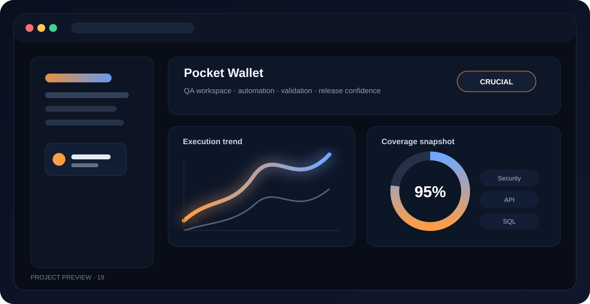
Wallet-style application with validation of user flows, transactions, input rules, data consistency and security considerations.
Department-focused healthcare system validation covering business workflows, data entry, permissions and release testing.
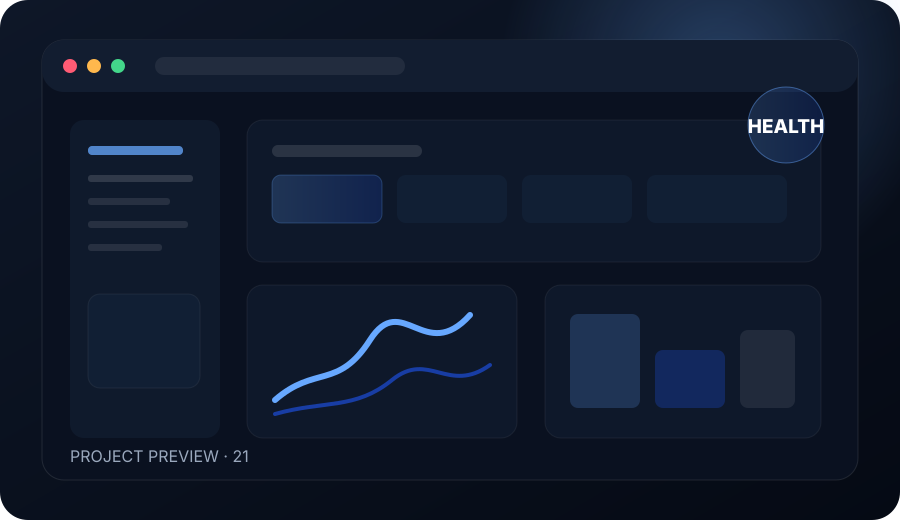
Healthcare HRMS application tested across employee workflows, permissions, data accuracy and regression cycles.